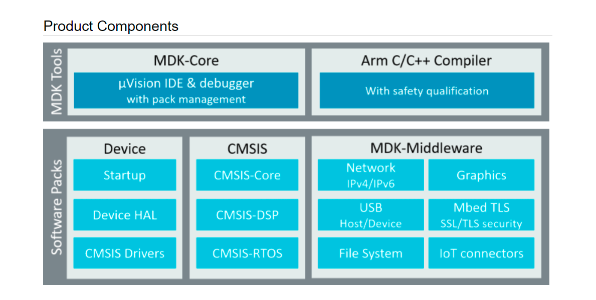
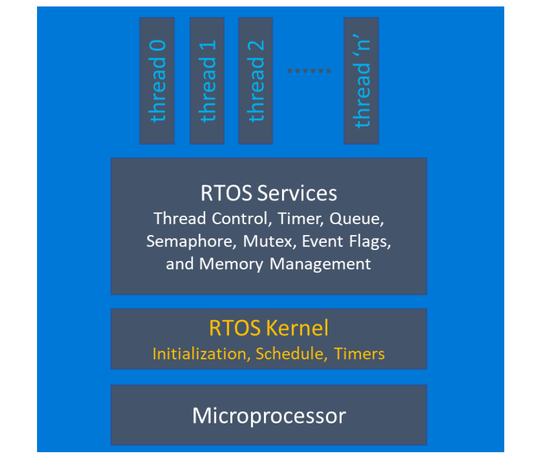
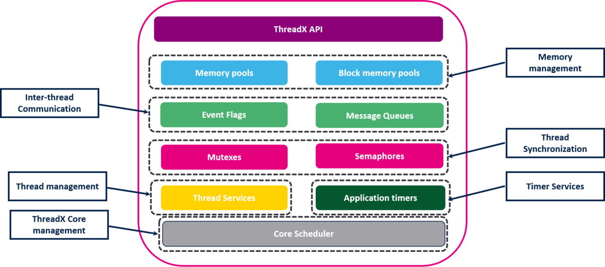
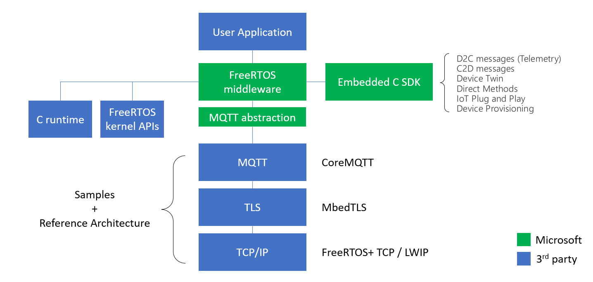
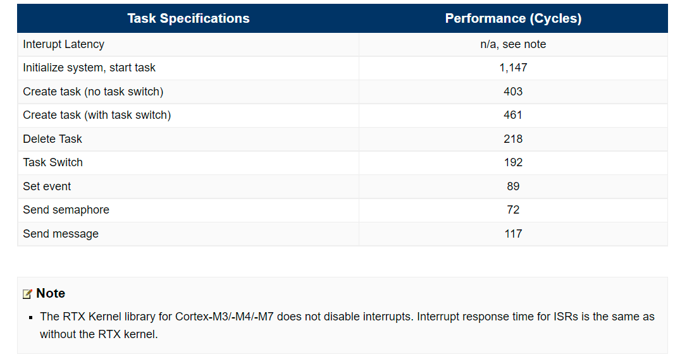
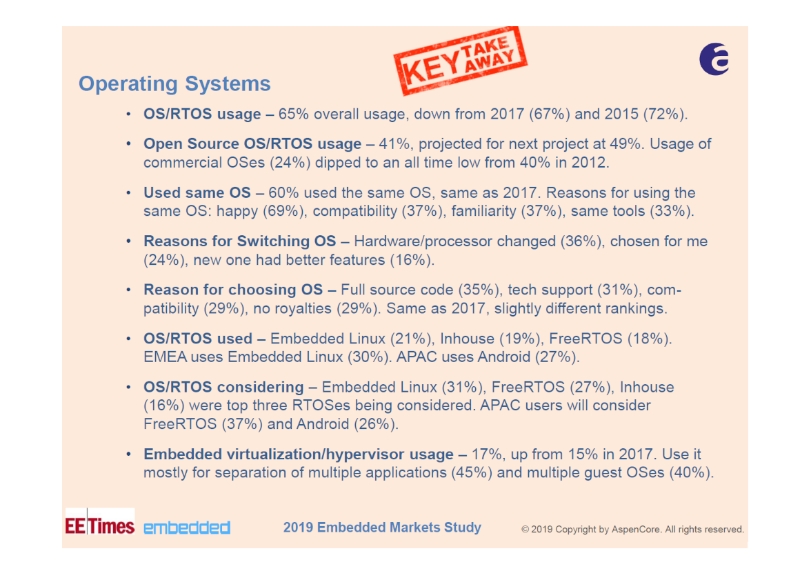
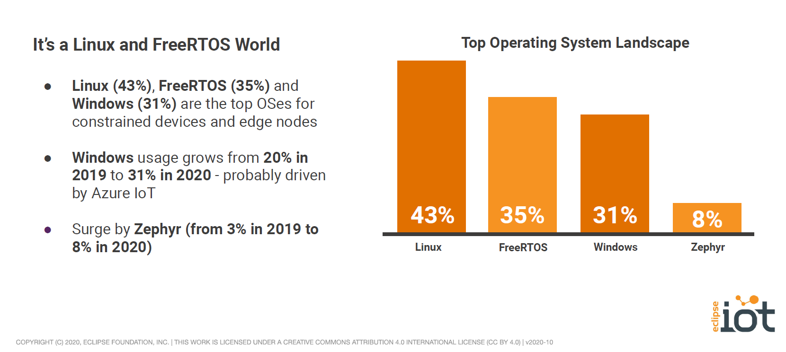

Real-Time Operating System (RTOS)#
Keywords: Multitasking, Multithread Microcontroller Programming, Open-Source RTOSes for MCUs, Real-Time Systems
▷ ความสำคัญของระบบปฏิบัติการ#
ระบบปฏิบัติการ (Operating System: OS) หรือที่มักเรียกอย่างย่อว่า "โอเอส" เป็นซอฟต์แวร์ประเภทหนึ่งที่ช่วยจัดการทรัพยากรของคอมพิวเตอร์ในด้านต่าง ๆ เช่น มีการแบ่งเวลาในการประมวลผลโดยซีพียูและใช้ทรัพยากรของระบบ มีรูปแบบของการจัดการที่เรียกว่า "โพรเซส" (Process) การทำงานของโอเอสช่วยให้หลายแอปพลิชันในระบบสามารถทำงานได้เสมือนว่าเกิดขึ้นได้พร้อมกัน ในระบบที่มีผู้ใช้งานหลายคน (Multi-User Systems) ก็มีการป้องกันการเข้าถึงหน่วยความจำ โดยจำกัดสิทธิ์สำหรับผู้ใช้แต่ละคน หรือมีการแบ่งระดับของการทำงานแตกต่างกันระหว่างโอเอสและแอปพลิเคชันของผู้ใช้
ตัวเลือกสำหรับระบบปฏิบัติการในปัจจุบัน มีความหลากหลายแตกต่างกันไป เช่น Windows, Linux, Mac OS สำหรับเครื่องคอมพิวเตอร์ทั่วไป หรือ ระบบปฏิบัติการ Android หรือ iOS สำหรับโทรศัพท์มือถือ (Smart Phones) เป็นต้น
▷ การทำงานแบบหลายงานได้พร้อมกัน#
การเขียนโปรแกรมแบบมัลติทาสก์ (Multi-Task Programming) เป็นรูปแบบหนึ่ง เพื่อจัดการการทำงานของโปรแกรม โดยมองว่า การทำงานของโปรแกรมหรือแอปพลิเคชัน จะประกอบด้วยงานย่อย หรือ ทาสก์ (Tasks) หรือบางทีก็เรียกว่า "เธรด" (Threads) ได้หลาย ๆ งาน และทำงานไปได้พร้อม ๆ กัน โดยมีการแบ่งช่วงเวลาสลับกันในการทำงานของซีพียู (CPU Time Sharing)
ทาสก์จะทำงานตามไปทีละคำสั่งตามลำดับ (Flow of Execution) ทาสก์ที่มีอยู่ในระบบ ก็สามารถทำงานอิสระต่อกัน หรืออาจเกี่ยวข้องกันก็ได้ เช่น การสื่อสารข้อมูลกัน หรือรอจังหวะกันระหว่างทาสก์ (Inter-Task Communication & Synchronization)
ถ้าเราสามารถจัดสรร หรือแบ่งเวลาและทรัพยากร ให้ทาสก์เหล่านั้นได้สลับกันทำงาน โดยใช้ซีพียูเดียวกัน ก็อาจมองเห็นได้ว่า ทาสก์ต่าง ๆ เหล่านั้นทำงานไปพร้อม ๆ กัน (Task Concurrency) ไม่จำเป็นต้องรอให้ทาสก์ใดจบการทำงานก่อน
ในปัจจุบันไมโครคอนโทรลเลอร์เริ่มมีการใช้ตัวประมวลผลที่มีแกนของซีพียู (CPU Cores) ได้มากกว่าหนึ่งแกน (Multi-Core Processor) สามารถรันคำสั่งของซีพียูแบบขนานกันในระดับฮาร์ดแวร์ ดังนั้นการทำงานแบบมัลติทาสก์ ก็สามารถใช้ประโยชน์จากการมีตัวประมวลผลแบบหลายแกนได้อย่างมีประสิทธิภาพมากขึ้น
▷ OS สำหรับระบบสมองกลฝังตัว#
ระบบปฏิบัติการที่จะนำมาใช้ได้สำหรับระบบสมองกลฝังตัว (Embedded Systems) อาจมีข้อจำกัดของทรัพยากรด้านฮาร์ดแวร์ (Resource Constraints) เช่น ขนาดของหน่วยความจำ RAM ที่ค่อนข้างน้อยสำหรับไมโครคอนโทรลบางรุ่นบางตระกูล (มีความจุอยู่ในระดับหลักสิบหรือหลักร้อยกิโลไบต์ KB) และ ความสามารถหรือความเร็วของตัวประมวลผล (พิจารณาจากความถี่สำหรับการทำงานของซีพียู หรือ ความสามารถในการทำคำสั่งของซีพียูต่อวินาที) อาจไม่สูงมากในระดับ High-End Processors เป็นต้น
นอกจากนั้น อาจมีความจำเป็นต้องตอบสนองต่อเหตุการณ์ให้ทันเวลา หรือทำงานบางอย่างให้เสร็จภายในระยะเวลาที่กำหนด (Deadlines) หากเกินระยะเวลาที่กำหนดไว้ อาจทำให้เกิดความเสียหายตามมาได้ ดังนั้นในมุมมองนี้ จึงมีการจำแนกระบบเวลาจริง (Real-Time Systems: RTS) ตามผลกระทบเชิงลบที่ตามมา หากทำงานไม่ทันเวลาตามข้อกำหนด เป็นได้สองประเภทหลักคือ
- Soft real-time: มีผลกระทบที่เกิดจากความผิดพลาดอยู่ในระดับที่ไม่รุนแรง หรือยอมรับได้ หรือทำให้คุณภาพการบริการของระบบลดลง แต่ระบบยังทำงานต่อไปได้ เช่น การส่งข้อมูลแบบสตรีมมิง (Real-Time Streaming)
- Hard real-time: มีผลกระทบต่อการทำงานของระบบที่ทำให้เกิดความผิดพลาดหรือเสียหาย และอาจรวมไปถึงความสูญเสียหรือเป็นอันตรายต่อผู้ใช้ เช่น ระบบการทำงานโดยอัตโนมัติของถุงลมนิรภัย ระบบควบคุมความเร็วโดยอัตโนมัติในการขับขี่รถยนต์ เป็นต้น
ดังนั้นเมื่อจะพัฒนาซอฟต์แวร์หรือระบบที่มีความต้องการในลักษณะนี้ (ความสามารถในการตอบสนองแบบเรียลไทม์) ระบบปฏิบัติการเวลาจริง (Real-Time Operating System: RTOS) หรือเรียกย่อ ๆ ว่า "อาร์ทอส" จึงเป็นตัวเลือกที่สำคัญสำหรับนักพัฒนา
▷ การเขียนโค้ดแบบ Polling Loop / Superloop#
การพัฒนาซอฟต์แวร์สำหรับระบบสมองกลฝังตัว โดยทั่วไปแล้วก็ไม่จำเป็นต้องใช้ OS และ ส่วนใหญ่ก็ใช้วิธีการที่เรียกว่า Polling Loop หรือ Superloop เช่น มีการตรวจสอบอินพุตหรือเหตุการณ์ตามเงื่อนไขที่เกิดขึ้นในระบบ และเป็นการทำซ้ำไปเรื่อย ๆ ไปตามลำดับ เช่น การตรวจสอบดูว่า มีการกดปุ่มหรือไม่ หรือได้รับข้อมูลอินพุตเข้ามาจาก Serial/UART หรืออ่านค่าจากอินพุตของวงจร ADC (Analog-to-Digital Converter) ตามคาบเวลาที่กำหนดไว้ เป็นต้น
void main()
{
// initialization code
// enter the main loop
while (1) {
// perform task 1
task_function_1();
// perform task 2
task_function_2();
// ...
// perform task N
task_function_N();
}
}
ตัวอย่างโค้ดที่ 1: รูปแบบการเขียนโค้ดภาษา C ที่แสดงหลักการทำงาน Polling Loop
#define T1_PERIOD 10 /*msec*/
#define T2_PERIOD 50 /*msec*/
void main()
{
// initialization code
uint32_t t_now, t1=0, t2=0;
// enter the main loop
while (1) {
// get current time
t_now = get_time_msec();
// task 1
if ( t_now - t1 >= T1_PERIOD ) {
perform_task_function_1();
t1 = t_now; // save current time to t1
}
// task 2
if ( t_now - t2 >= T2_PERIOD ) {
perform_task_function_2();
t2 = t_now; // save current time to t2
}
}
}
ตัวอย่างโค้ดที่ 2: รูปแบบการเขียนโค้ดภาษา C สำหรับสองทาสก์ที่ทำงานซ้ำตามคาบเวลา
หากมีอินพุตเข้ามา หรือเงื่อนไขสำหรับเหตุการณ์เป็นจริง ก็ให้ทำฟังก์ชันที่เกี่ยวข้อง (จะมองว่าเป็นทาสก์ก็ได้)
ฟังก์ชันของแต่ละทาสก์ อาจใช้เวลาในการทำงาน (Execution Time) ไม่เท่ากัน
แต่ละทาสก์ก็ไม่ควรใช้เวลานานเกินไปในแต่ละรอบของการทำงาน และจะต้องไม่บล็อคการทำงาน
(เช่น การวนไปเรื่อย ๆ เพื่อรอเหตุการณ์บางอย่าง หรือ การใช้คำสั่งประเภท
delay หรือ sleep เป็นต้น)
ถ้าทาสก์ใดใช้เวลามาก (แต่อาจจะไม่จำเป็นต้องทำบ่อย) ก็ใช้วิธีการแบ่งการทำงาน ให้เป็นงานย่อยหรือขั้นตอนย่อย และใช้โมเดลการทำงานที่เรียกว่า "เครื่องสถานะจำกัด" (Finite State Machine: FSM) เข้ามาช่วย ให้ทำงานในแต่ละขั้นตอนตามสถานะของทาสก์
แม้ว่าการเขียนโค้ดแบบ Superloop จะสามารถทำงานร่วมกับอินเทอร์รัพท์ได้ (เช่น การใช้ Timer Interrupt และ External Interrupt ของไมโครคอนโทรลเลอร์) เพื่อตอบสนองต่อเหตุการณ์ที่เกิดขึ้นในระบบ แต่ก็ยังมีข้อจำกัดในการตอบสนองแบบเรียลไทม์ ลำดับการทำงานของฟังก์ชันหรือทาสก์ เป็นแบบเรียงลำดับตามที่เขียนไว้ในโค้ด และไม่สามารถกำหนดความสำคัญหรือความเร่งด่วนของทาสก์ที่แตกต่างกันได้ ซึ่งไม่เหมือนในกรณีที่ใช้เรียลไทม์เคอร์เนล หรีอ เรียลไทม์โอเอส
▷ ตัวเลือก OS / RTOS สำหรับงาน IoT#
ในปัจจุบัน "อินเทอร์เน็ตของสรรพสิ่ง" หรือ "ไอโอที" (Internet of Things: IoT) เป็นเทคโนโลยีที่กำลังได้รับความสนใจและมีการใช้งานแพร่หลาย การพัฒนาระบบทั้งฮาร์ดแวร์และแอปพลิเคชันสำหรับ IoT จึงมีความสำคัญ
ในส่วนของฮาร์ดแวร์ ก็มีความหลากหลาย อาจเป็นบอร์ดไมโครคอนโทรลเลอร์ขนาดเล็ก ซึ่งถูกจัดอยู่ในประเภท Low-end Devices) หรือคอมพิวเตอร์บอร์ดเดี่ยว (Single Board Computer: SBC) ในประเภท High-end Devices และมีการใช้งานร่วมกับระบบปฏิบัติการสำหรับฮาร์ดแวร์เหล่านี้
ถ้าใช้บอร์ดประเภท SBC อย่างเช่น Raspberry Pi (RPi) หรือ บอร์ดอื่นที่ใช้ชิปประเภท SoC ซึ่งภายในมีตัวประมวลผล ARM Cortex-A Series ทั้ง 32 บิต และ 64 บิต (เช่น ARM Cortex-A17 / A53 / A72 ) ก็สามารถเลือกใช้ระบบปฏิบัติการ Linux และ Distro อย่างเช่น
ข้อสังเกต: โอเอสในประเภทนี้ตามที่ได้ยกตัวอย่างมา ไม่ได้ทำงานด้วยเรียลไทม์เคอร์เนล ดังนั้นจึงไม่ใช่ RTOS หรืออาจกล่าวได้ว่า โอเอสสำหรับงานด้านไอโอที ก็ไม่มีความจำเป็นต้องเป็นอาร์ทอส (ยกเว้นบางกรณีที่มีความจำเป็นต้องใช้อาร์ทอส)
อย่างไรก็ตาม โอเอสสำหรับระบบสมองกลฝังตัวที่ใช้สำหรับงาน IoT (Embedded OS for IoT devices) อาจจะไม่เน้นความเป็นเรียลไทม์ แต่ให้ความสำคัญกับความยืดหยุ่นในการพัฒนาซอฟต์แวร์ ความสามารถในการเชื่อมต่อด้วยโพรโทคอลสื่อสารแบบต่าง ๆ การเชื่อมต่อกับบริการในระบบคลาวด์ รวมถึงความมั่นคงปลอดภัยในเครือข่ายหรือทางไซเบอร์ (Cyber Security) เป็นต้น
▷ ตัวเลือก RTOS แนะนำสำหรับการเรียนรู้#
ในปัจจุบัน ระบบปฏิบัติการเวลาจริง หรือ "เรียลไทม์โอเอส หรือ อาร์ทอส" (RTOS) สำหรับไมโครคอนโทรลเลอร์ มีให้เลือกใช้อยู่หลายตัวเลือก (ส่วนใหญ่จะเหมาะสมกับระบบที่มีตัวประมวผลหรือซีพียูขนาด 32 บิต) จำแนกได้เป็น Open Source / Free / Commerical ตัวอย่างที่มีการใช้งานแพร่หลาย เช่น
- AWS FreeRTOS: open source (Github repo), MIT License (V10.0.0 or higher)
- ARM mbed OS: open source
(Github repo),
Apache 2.0 License
- based on ARM RTX Keil, commercial
- Microsoft Azure RTOS ThreadX: open source
(Github repo),
commercial
- free for pre-licensed devices
- Apache NuttX: open source (Github repo), Apache License 2.0
- Apache MyNewt: open source (download), Apache License 2.0
- Zephyr OS: open source (Github repo), Apache License 2.0
- ChibiOS/RT: open source (Github repo), GPL3 License
- RT-Thread: open source (Github repo), Apache License 2.0
- AliOS-Things / Rhino RT Kernel: open source (Github repo), Apache License 2.0
- Micrium / Silicon Labs μC/OS III: open source (Github repo), Apache License 2.0
- WindRiver VxWorks: commercial
จากรายการตัวเลือกนี้ จะเห็นได้ว่า RTOS โดยส่วนใหญ่นั้นเป็นซอฟต์แวร์ประเภทโอเพนซอร์ส (เลือกแผยแพร่โดยใช้ Apache License 2.0 เป็นส่วนใหญ่) และมีการนำไปปรับให้ใช้งานได้กับไมโครคอนโทรลเลอร์หลายตระกูล (RTOS porting to target devices) เช่น ARM Cortex-M Series และ RISC-V เป็นต้น บางตัวเลือก็สามารถใช้กับไมโครคอนโทรลเลอร์ขนาด 8 บิต ที่มีหน่วยความจำไม่มากได้ด้วย เนื่องจากตัว RTOS มีขนาดเล็กในหน่วยความจำ (Small Memory Footprint)
▷ ความแตกต่างระหว่าง RT Kernel และ RTOS#
- บ่อยครั้งที่เราอาจได้ยินคำว่า "เรียลไทม์โอเอส" และ "เรียลไทม์เคอร์เนล" (Real-Time Kernel: RT Kernel, RTK) ซึ่งอาจใช้เรียกแทนกันได้ แต่สองอย่างนี้ก็มีความแตกต่างกันอยู่บ้าง กล่าวคือ เรียลไทม์เคอร์เนลเป็นส่วนหนึ่งของเรียลไทม์โอเอส ทำหน้าที่จัดลำดับการทำงานแบบมัลติทาสก์ เช่น มีการกำหนดระดับความสำคัญ (Priority Level) ของงานย่อยหรือทาสก์ และทำหน้าที่ตัดสินใจว่า ทาสก์ใดจะได้รับจัดสรรเวลาก่อนหลัง (Task Scheduling) เป็นต้น
- นอกเหนือจาก RTK ยังมีซอฟต์แวร์ส่วนอื่นอีกที่เกี่ยวข้องและทำงานอยู่บนชั้น RTOS เช่น ซอฟต์แวร์หรือ Middleware / Software Packs (เช่น IPv4/IPv6 Network Stack, MQTT, TLS, USB Stack, File System) ไว้สำหรับเขียนโค้ดเข้าถึงฮาร์ดแวร์ต่าง ๆ และช่วยให้พัฒนาซอฟต์แวร์ได้ง่ายและสะดวกรวดเร็วขึ้น

รูปภาพ: Keil MDK / RTX (Microcontroller Development Kit) & Software Components

รูปภาพ: RTOS Kernel & Services (Source: Microsoft)

รูปภาพ: Azure ThreadX Components (Source: STM32MCU Wiki)

รูปภาพ: Azure IoT Middleware (Source: Microsoft)
▷ การจัดลำดับการทำงานสำหรับ RTOS#
เมื่อมีการแบ่งการทำงานของระบบหรือโปรแกรม ออกเป็นงานย่อย หรือ ทากส์ ก็จะต้องมีการจัดสรรเวลาสำหรับการทำงานของทาสก์ (เช่น ในกรณีที่มีเพียงซีพียูเดียว) และมีวิธีการจัดการได้หลายแบบ ยกตัวอย่างหลักการพื้นฐาน เช่น
- Round Robin Scheduling: มีการจัดลำดับการทำงานของทาสก์
และให้ทำงานโดยการแบ่งช่วงเวลาต่อการทำงานหนึ่งทาสก์ (เรียกว่า Time Slice
หรือ Time Slot) แล้วให้วนไปตามลำดับ
- การทำงานแบบนี้ไม่เหมาะสำหรับการทำงานแบบเรียลไทม์
- Cooperative Scheduling: มีการจัดลำดับการทำงานของทาสก์เหมือนกรณี Round-Robin แต่ไม่กำหนดเวลาทำงาน ทาสก์ที่ทำงานอยู่ในขณะนั้น (Running Task หรือ Active Task) จะต้องยอมหยุดการทำงานชั่วคราว (แล้วคอยกลับมาทำต่อในครั้งถัดไป) เพื่อให้ทาสก์ถัดไปที่พร้อมจะทำงาน (Ready Task) ได้ถูกเรียกให้ทำงานในลำดับถัดไป
- Priority-based Pre-emptive Scheduling:
มีการจัดลำดับความสำคัญของแต่ละทากส์ (Task Priority)
ทากส์ที่มีความสำคัญสูงกว่าจะได้ทำงานก่อนทาสก์ที่มีความสำคัญน้อยกว่า และการขัดจังหวะการทำงาน
(Premption) อาจเกิดขึ้นได้ โดยทาสก์ที่พร้อมจะทำงานและมีความสำคัญสูงกว่าทาสก์ที่ทำงานในขณะนั้น
- การทำงานแบบนี้เหมาะสำหรับการนำไปใช้กับ RTOS
องค์ประกอบหนึ่งของเคอร์เนล (Kernel) ที่เกี่ยวข้อง ได้แก่ Task Scheduler / Task Dispatcher ทำหน้าที่จัดลำดับการทำงานของทาสก์และเลือกทาสก์ถัดไปตามอัลกอริทึมที่กำหนดไว้ เมื่อถึงเวลาต้องสลับบริบทการทำงาน (Task Context Switching)
การจัดการดังกล่าว จะต้องเกิดขึ้นอย่างรวดเร็ว มีระยะเวลาในการเปลี่ยนหรือสลับบริบทการทำงาน (Task Switching Latency) ไม่เกินขอบเขตบน (Upper Bound) และควรจะให้สั้นที่สุดเท่าที่จะเป็นได้ (แต่ก็ขึ้นอยู่กับปัจจัย เช่น ความเร็วในการประมวลผลและการจัดการภายในของซีพียูด้วย) ซึ่งจะส่งผลต่อการตอบสนองแบบเรียลไทม์ที่มีต่อเหตุการณ์ของระบบ
▷ บริบทสำหรับการทำงานของทาสก์#
เมื่อมีหลายทาสก์ที่ต้องแชร์เวลาการทำงานและใช้ทรัพยากรของซีพียูร่วมกัน แต่ละทาสก์จะต้องมีการจัดเก็บข้อมูล ไว้ในหน่วยความจำเป็นของตัวเอง เพื่อใช้ในการทำงาน เรียกว่า บริบทการทำงานของทาสก์ (Task Context)
ถ้ามองในรูปแบบของโครงสร้างข้อมูล ก็มักเรียกว่า (Task Control Block: TCB) ยกตัวอย่าง เช่น
- ค่าของรีจิสเตอร์ที่เรียกว่า Program Counter (PC) ซึ่งเป็นตัวระบุแอดเดรสของคำสั่งถัดไปสำหรับการทำงานของทาสก์
- รีจิสเตอร์ชี้ตำแหน่งบนสุดของหน่วยความจำแบบกองซ้อน (หรือสแตก) สำหรับทาสก์ (Top of Stack / Task Stack Pointer)
- ขนาดของสแตกสำหรับทาสก์ (Task Stack Size)
- ระดับความสำคัญของทาสก์ (Task Priority)
- ตัวระบุชื่อของทาสก์ (Task Name / Task ID) และ
- สถานะของทาสก์ (Task States) เป็นต้น
การสลับบริบทของทาสก์ จะต้องมีการบันทึกบริบทของทาสก์ที่กำลังทำงานอยู่ในขณะนั้นไว้ในหน่วยความจำ ขั้นตอนนี้เรียกว่า การบันทึกบริบท (Context Save) จากนั้นแล้วจึงนำบริบทของทาสก์ถัดไปกลับมาเพื่อให้ทำงาน ต่อจากสถานะเดิมที่ได้หยุดเอาไว้ และขั้นตอนนี้เรียกว่า การเรียกคืนบริบท (Context Restore)
▷ ประสิทธิภาพของ RTOS#
การตอบสนองแบบเรียลไทม์ของระบบ ก็ขึ้นอยู่กับประสิทธิภาพในการทำงานของ RTOS ดังนั้นผู้พัฒนา RTOS จะต้องให้ข้อมูลเกี่ยวกับระยะเวลาในการทำงาน อาจเป็นค่าที่มากสุด (Worst-Case Execution Time: WCET) ของบริการพื้นฐานต่าง ๆ (RTOS Services / Primitives) อย่างเช่น
- การสลับบริบทของทาสก์ (Task Switch)
- การตอบสนองต่อเหตุการณ์ หรือ อินเทอร์รัพท์ของระบบ (Interrupt Latency)
- การสร้างทาสก์ใหม่ (Task Creation)
- การจัดการเข้าใช้งานทรัพยากรร่วมกันระหว่างทาสก์ โดยใช้สิ่งที่เรียกว่า "เซมาฟอร์" (Semaphore)
- การส่งข้อความไปยังแถวคอย (Message Queue) เพื่อสื่อสารข้อมูลกันระหว่างทาสก์
- การเซตหรือเคลียร์บิตเหตุการณ์ (Event Flag) เป็นต้น
โดยมีหน่วยการวัดระยะเวลาในการทำงาน เป็นไซเคิลของซีพียู (CPU Cycles) หรืออาจระบุเป็นหน่วยเวลาก็ได้ เช่น ไมโครวินาที (ซึ่งก็ขึ้นอยู่กับความถี่ของซีพียูในการทำงานด้วย)

รูปภาพ: ตัวอย่างข้อมูลเกี่ยวกับ RTOS Performance ของ Keil RTX (Source: Keil)
▷ แนวโน้มของการใช้งาน OS / RTOS#
จากการศึกษาด้วยวิธีการทำแบบสำรวจออนไลน์ "Embedded Markets Study 2019" (ไฟล์ local copy) โดย EETimes ของบริษัททำสื่อ AspenCore Media ในช่วงต้นปีค.ศ. 2019 มีประเด็นหรือคำถามสำหรับผู้ทำแบบสำรวจ ที่น่าสนใจเกี่ยวกับการใช้งาน OS / RTOS ดังนี้
- โปรเจกต์ปัจจุบันได้มีการใช้งาน OS / RTOS / RT Kernel / RT Scheduler หรือไม่ ? จากข้อมูลแบบสำรวจในปีค.ศ. 2019 อยู่ที่ 65% ของผู้ตอบแบบสำรวจ และเปรียบเทียบกับข้อมูลย้อนหลัง (ค.ศ. 2013 / 2014 / 2015/ 2017) ซึ่งอยู่ในช่วง 67% ถึง 72% อาจกล่าวได้ว่า เกินกึ่งหนึ่งได้มีการใช้งาน (ดูไฟล์รูปภาพแสดงผลสำรวจ)
- โปรเจกต์ในปัจจุบันได้เลือกใช้ หรือในโปรเจกต์ถัดไป จะเลือกใช้ OS / RTOS แบบไหน เช่น Open Source (no commercial support), Commercial (มี Source Code หรือไม่ ) หรือพัฒนาขึ้นมาใช้งานเอง จากผลสำรวจสามารถสรุปได้ว่า ประมาณ 40% เลือกใช้ Open Source (ดูไฟล์รูปภาพแสดงผลสำรวจ)
- คำถามว่า ในโปรเจกต์ปัจจุบันได้ใช้ RTOS หรือ RT Kernel เหมือนโปรเจกต์ที่แล้วหรือไม่ (ดูไฟล์รูปภาพแสดงผลสำรวจ) แล้วด้วยเหตุผลใด เช่น ไม่มีความจำเป็นต้องเปลี่ยนจากตัวเลือกที่ใช้อยู่เดิมเพราะใช้ได้ดีอยู่แล้ว (ดูไฟล์รูปภาพแสดงผลสำรวจ) หรือถ้าได้เปลี่ยนตัวเลือก มีเหตุผลใด ? เช่น เนื่องจากมีการเปลี่ยนฮาร์ดแวร์หรือชิปตัวประมวลผล (ดูไฟล์รูปภาพแสดงผลสำรวจ)
- คำถามถึงเหตุผลว่า ทำไมจึงไม่เลือกใช้ Commercial OS / RTOS ซึ่งก็มีหลายเหตุผล เช่น มองว่า มีราคาแพงเกินไป
- ปัจจัยใดที่สำคัญที่สุดในการเลือก OS / RTOS เช่น มีซอร์สโค้ดมาให้ด้วยถือว่าเป็นปัจจัยที่สำคัญสุดในการเลือกใช้งาน (ดูไฟล์รูปภาพแสดงผลสำรวจ)
- คำถามว่า ผู้ตอบแบบสำรวจได้เลือกใช้งาน OS / RTOS ใดบ้างในปัจจุบัน ซึ่งจากการสำรวจ Embedded Linux มาเป็นอันดับแรก และอันดับสองคือ Inhouse / custom หรือที่ได้พัฒนาเอง แต่ถ้าเป็นประเภท RTOS ก็สรุปได้ว่า FreeRTOS เป็นตัวเลือกอันดับแรกสุด (ดูไฟล์รูปภาพแสดงผลสำรวจ) และใน 12 เดือนข้างหน้า จะเลือกใช้ Commercial OS / RTOS ตัวเลือกใด (ดูไฟล์รูปภาพแสดงผลสำรวจ)
{kind=link}
{kind=link}
{kind=link}
{kind=link}
{kind=link}
{kind=link}
{kind=link}
{kind=link}
 รูปภาพ: สรุปประเด็นสำคัญจากแบบสำรวจ Embedded Markets Study 2019 ในหัวข้อ OS
อีกผลการสำรวจหนึ่งที่น่าสนใจคือ "IoT Developer Survey" สำหรับปีค.ศ. 2020 (ไฟล์ local copy) นำเสนอโดย Eclipse Foundation ซึ่งมีประเด็นหรือคำถามเกี่ยวข้องกับหัวข้อ IoT แต่ขอยกตัวอย่างประเด็นที่เกี่ยวข้องกับ OS / RTOS ดังนี้
- จากผลการสำรวจพบว่า ในการใช้งาน OS / RTOS สำหรับงานด้าน IoT อันดับแรกเป็น Linux มากถึง 43% อันดับสองคือ FreeRTOS (35%) และ Windows (31%) ตามลำดับ
- การใช้งาน Zephyr ซึ่งเป็น Open Source RTOS เพิ่มขึ้นจาก 3% ในปีค.ศ. 2019 มาเป็น 8% ในปีค.ศ. 2020
 รูปภาพ: ผลสำรวจโดย Eclipse Foundation เกี่ยวกับตัวเลือก OS สำหรับ IoT
▷ คุณภาพและความปลอดภัยของ RTOS#
อีกประเด็นหนึ่งที่สำคัญเกี่ยวกับการเลือกสำหรับใช้งานเชิงอุตสาหกรรม คือ คุณภาพของซอร์สโค้ด ขบวนการพัฒนาซอฟต์แวร์ และความปลอดภัยของฟังก์ชันการทำงาน และการเลือกใช้อาร์ทอสที่ได้รับการตรวจสอบยืนยันความปลอดภัย (Safety-certified RTOS) ตัวอย่าง Functional Safety Certifications / Standards ได้แก่
- IEC 61508 Safety Integrity Level (SIL) 3 or 4 (for industrial applications)
- IEC 62304 Class C (for medical applications)
- ISO 26262 ASIL D (for automotive applications)
- EN 50128 SW-SIL 4 (for railway applications)
▷ กล่าวสรุป#
ระบบปฏิบัติการเวลาจริงหรือ เรียลไทม์โอเอส (RTOS) เป็นซอฟต์แวร์ประเภทหนึ่งที่มีความสำคัญสำหรับการพัฒนาระบบสมองกลฝังตัว โดยเฉพาะอย่างยิ่ง เมื่อใช้ไมโครคอนโทรลเลอร์เป็นตัวประมวลผลหลัก ดังนั้นการเรียนรู้ทำความเข้าใจหลักการทำงานของเรียลไทม์โอเอส และการฝึกปฏิบัติจริง จึงถือว่าเป็นพื้นฐานและทักษะที่สำคัญสำหรับนักพัฒนาระบบสมองกลฝังตัว นอกจากนั้นแล้วในปัจจุบันเราก็มีตัวเลือกที่หลากหลายสำหรับเรียลไทม์โอเอส และส่วนใหญ่ก็เป็นโอเพนซอร์สและนำมาใช้งานได้ฟรี
This work is licensed under a Creative Commons Attribution-ShareAlike 4.0 International License.
Created: 2021-11-07 | Last Updated: 2022-01-10